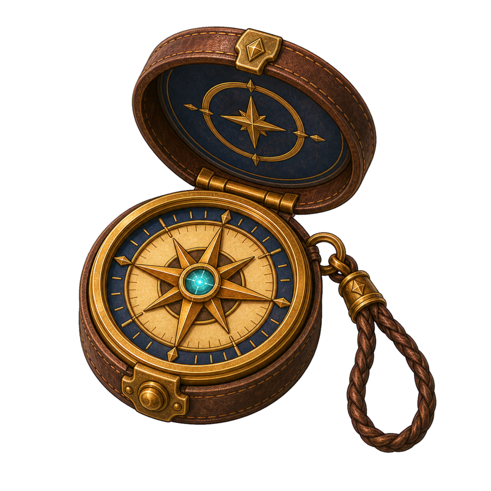
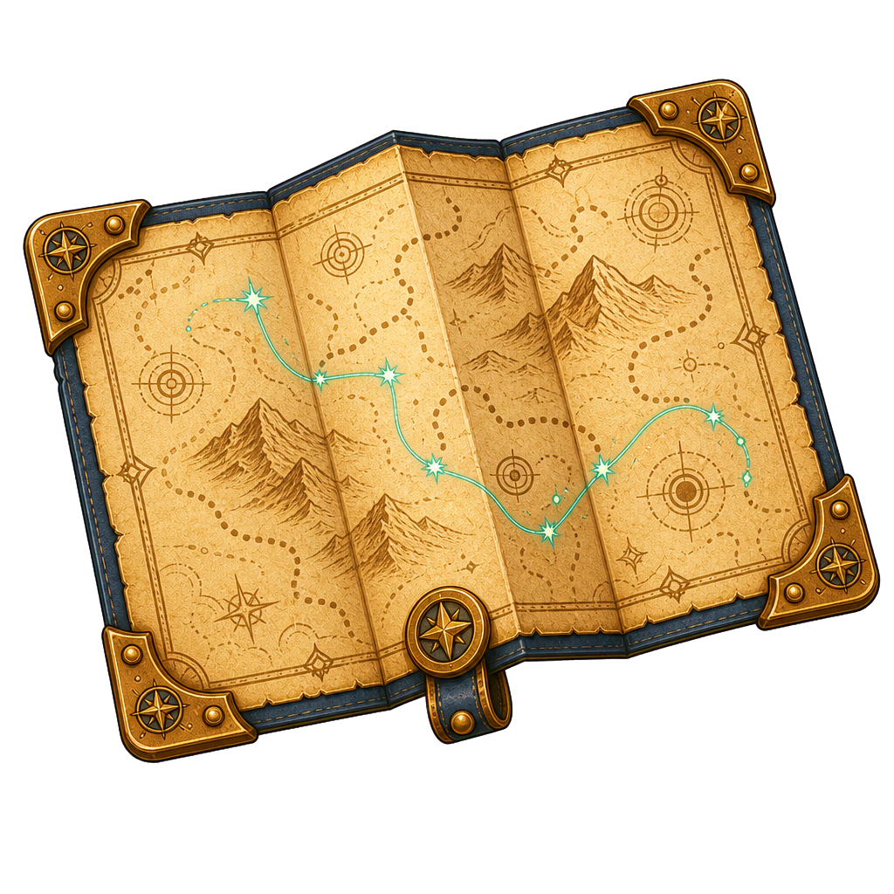
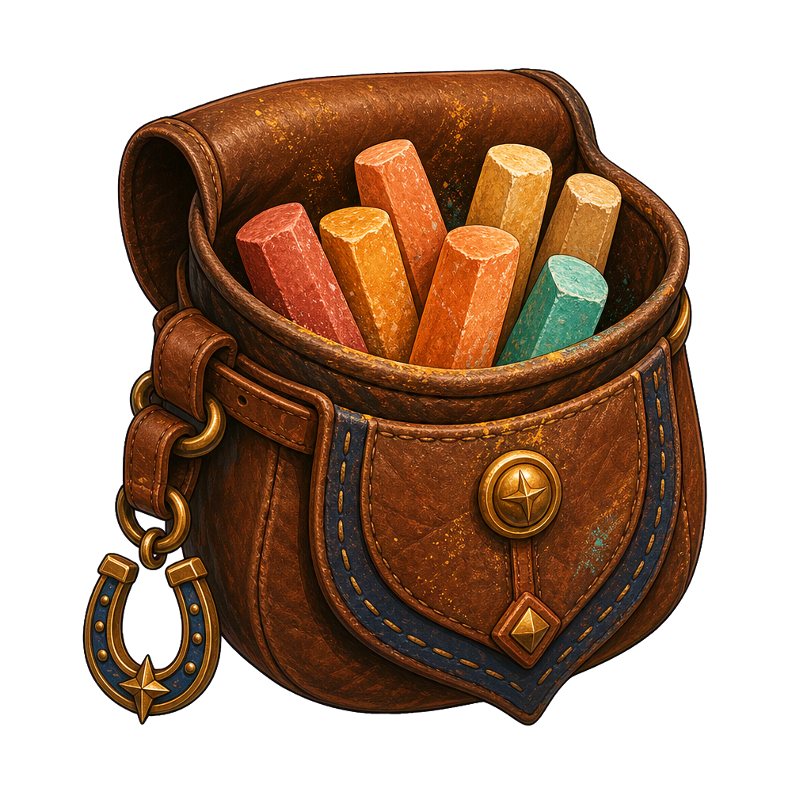
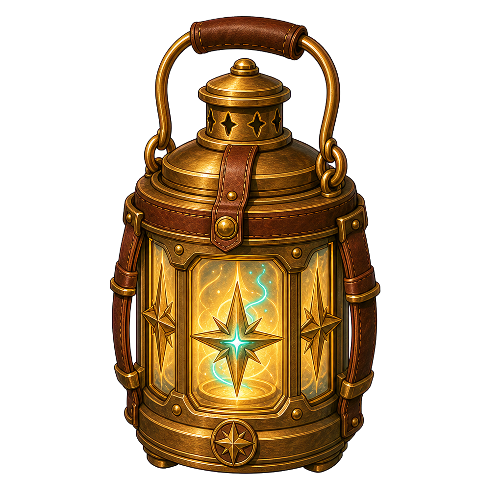
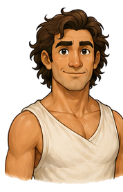
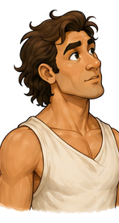
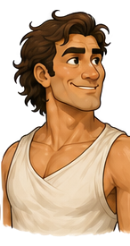
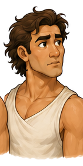
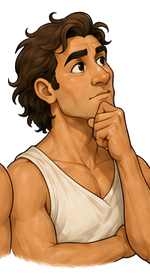

Product lead · expedition pathfinder
Mateo
he / him
Mateo makes the first uncertain step feel possible.


Warm presence · open stance · built for motion
Place in society
The person people ask to begin.
Mateo is a visible public leader who rallies hesitant groups and gives collective confidence a direction. He reads the room quickly, turns ambiguity into a next step, and makes momentum feel shared.
“Find the next true step.”
At his best
Creates clarity and courage when a group is stuck.
Watch for
Can mistake enthusiasm for alignment and move too quickly.
The agency lens
Two forms. One person.
The form reveals where Mateo's attention is centred—and whether he can shape what happens next.
Centaur · strengths in focus
“I can shape what happens next.”
Mateo is connected to his charisma, courage, and gift for forward motion. He can see pressure without being consumed by it, invite alignment, and turn his presence into positive action for other people.
- Attention
- Purpose and possibility
- Posture
- Open, listening, directional
- Impact
- Creates courage and shared motion
Reverse centaur · weaknesses consuming attention
“The world is deciding who I am.”
Urgency, doubt, or exclusion has captured Mateo's attention. Charisma becomes performance, decisiveness becomes rushing, and momentum becomes activity without alignment. He reacts to the world instead of having the impact he hopes to make.
- Attention
- Threat, urgency, proving himself
- Posture
- Scattered, sidelined, reactive
- Impact
- Motion without meaningful agency
D&D-style characteristics
How Mateo moves
Carried objects
A pathfinder’s pockets

Finds the next true step, not the whole route.

Keeps the destination visible while the path changes.

Leaves visible breadcrumbs for the people behind him.

Illuminates enough uncertainty for the group to move.
Emotional range
The face behind the momentum




